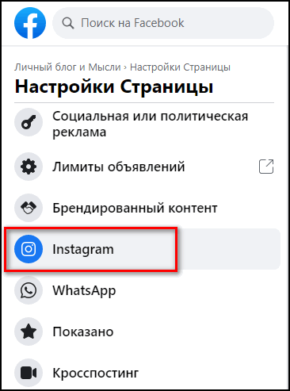
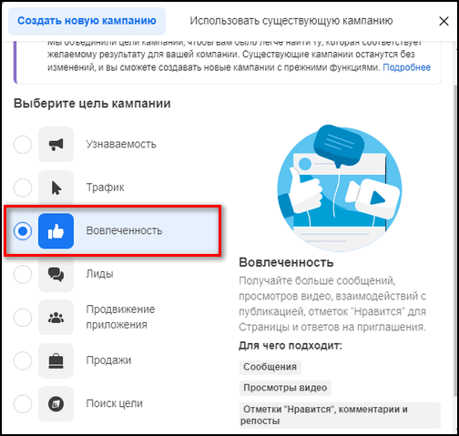
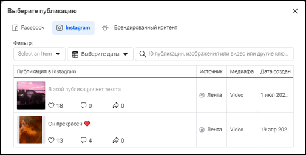
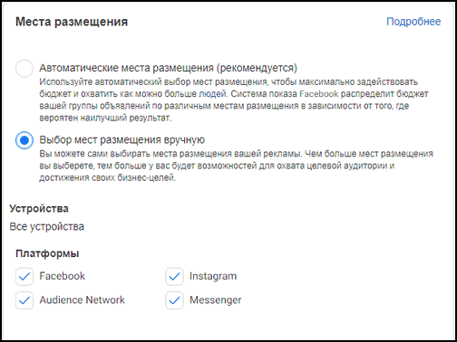
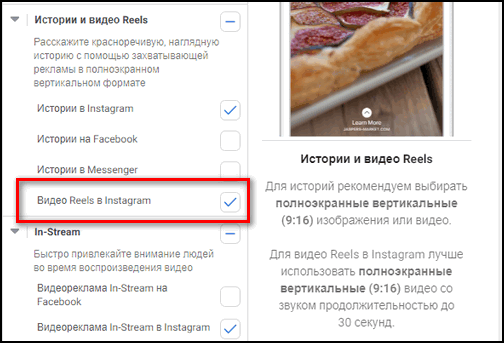

Продвижение Reels в Инстаграме: как настроить и запустить

Продвигать Рилс в Инстаграме* возможно через сервис Ads Manager, который связан с Facebook*. Его задача – расширить функционал рекламных кампаний и создать удобную площадку для продвижения.
Запуск рекламы для Рилс в Инстаграме*
Ads Manager – это сервис от Facebook*, который направлен на создание рекламных кампаний и управления группами объявлений. В отличие от стандартного раздела «Продвижение» в Инстаграме*, в Ads Manager можно настроить показ рекламы на разных площадках, а также воспользоваться меню «Предпросмотр» чтобы убедиться в качестве созданного объявления. Продвигать Reels в социальной сети без Facebook* пока не получится. Но есть другие способы, как сделать запись популярнее:
- хештеги. Те теги, которые соответствуют основной тематике блога и видеозаписи;
- распространение на других площадках. Например, в своем аккаунте в Tik Tok или Вконтакте с прикрепленной ссылкой;
- разместить в Сторис, чтобы прорекламировать.
Прямая реклама, которая не связана с разделом «Продвижение», может быть заблокирована в Инстаграме*. Но если владелец страницы собрал активную аудиторию от 500 – он может добавлять ссылки рекламодателя в описание к клипу.
Разбираемся с Ads manager
Пока нельзя продвигать Reels в Инстаграме*, но с Ads Manager эта проблема разрешима. Чтобы пользователю настроить рекламную кампанию, нужно подключить свой аккаунт Instagram* к Facebook*. Как связать учетные записи:
- Зайти в Facebook* – авторизоваться.
- Нажать сверху по дополнительному меню – Создать.
- Страницу – создать публичную.

- Перейти в созданный блог – Настройки.

- Instagram* – появится кнопка: «Подключить».
Чтобы выполнить подключение, нужно чтобы аккаунт в Инстаграме* также был в статусе «Автор» или «Бизнес». После подключения, можно воспользоваться двумя разными разделами для управления рекламой:
- Ads Manager. Классический инструмент для работы с рекламой;
- Meta Business. Новый сервис, который направлен на работу с Facebook* и Instagram*.
Как создать рекламу на продвижение Reels в Инстаграме*:
- Опубликовать видео Reels в своем профиле.
- Зайти в Ads Manager – нажать: «Создать».
- Цель кампании: «Вовлеченность» - Новое объявление.

- Использовать существующую публикацию – выбрать из профиля видео Reels.
- Перейти к разделу: «Instagram*» - указать пост.

Далее, нужно перейти к вкладке: «Новая группа объявлений»:
- Указать аудиторию – ниже: «Места размещения».

- Выбор вручную – убрать галочки везде, кроме Instagram*.
- Снизу появится: «Размещение в Историях и Reels».

Кроме этого, рекламодателю нужно указать: «Рекламный бюджет» и тип аудитории. Последнее нужно выбрать с учетом тематики блога, возрастных параметров и половой принадлежности.
Определить самостоятельно целевую аудиторию поможет аудит страницы. Это несложно, даже если вы недавно стали продвигаться в социальной сети.
Почему недоступно продвижение в самом Инстаграме*
Продвижение через Reels пока недоступно в самой социальной сети, но эта функция может быть введена в ближайшее время. Как и другие разделы, для внедрения продвижения необходимо время: от полугода до года. Другие причины, почему отсутствует:
- в Инстаграме* задействованы другие площадки для начала продвижения. Истории, публикации, но IGTV недоступно для продвижения;
- необходима дополнительная модерация;
- подготовка обновлений социальной сети для всех пользователей.
Reels недоступен в некоторых регионах, поэтому отсутствие продвижения в приложении оправдано. С другой стороны, рекламные предложения, которые появляются в Рилс, зачастую выполнены как баннерные изображения на несколько секунд.
Другие способы продвижения
С помощью Рилс можно продвигать Инстаграм* и другими способами: сделать вирусный клип, регулярно добавлять новые, создать собственный мини-сериал. Варианты, как продвигать Reels:
- инструкции. Поделиться с подписчиками туториалом;
- интересная обложка. Добавлять к каждому клипу завлекающую картинку;
- использовать популярную музыку. Просматривать видео конкурентов и сохранять аудио, которые они применяют для своих клипов;
- определить для себя время размещения.
Последний пункт влияет на количество просмотров, если автор работает на уже собранную аудиторию. То есть, у него есть подписчики, которые заинтересованы в просмотре Рилс и посещают социальную сеть в определенное время.
Правила о рекламе в Reels
Продвигаясь через таргет в Ads Manager, рекламодатель должен помнить об основных требованиях к объявлениям. К Рилс применимы те же правила, что и для остальных промоакций в социальной сети.
| Можно: | Нельзя: |
| Рекламировать продукт и показывать его | Рекламировать чаи для похудения/диеты, использовать фото «до/после» |
| Призывать на вебинары/курсы, без гарантии успеха в дальнейшем | Использовать формулировки «100% результат»/Гарантированная эффективность |
| Рекламировать личные профили/посты знакомства как призыв к своему блогу | Использовать чужие материалы: фото, музыку |
| Использовать готовые рекламные макеты, но которые содержат личные снимки или приобретенные на стоках | Рекламировать алкоголь-табачные изделия/ставки на спорт |
| Использовать музыку, которая есть в Галерее Инстаграма* | Использовать расисткие высказывания/оскорблять других пользователей по национальному признаку |
Если пользователь создает рекламное предложение и отправляет его на рассмотрение в Ads Manager, в течение нескольких суток будет отправлен ответ: отказ или подтверждение. В первом случае автор получит замечания и советы по улучшению своей промоакции, макета или описания.